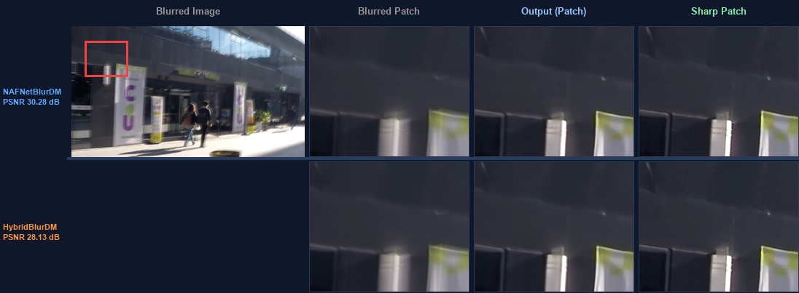
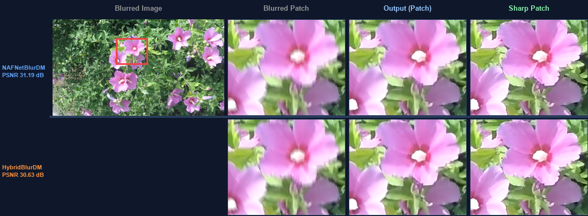
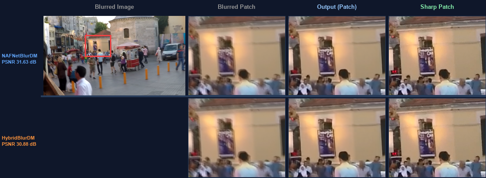
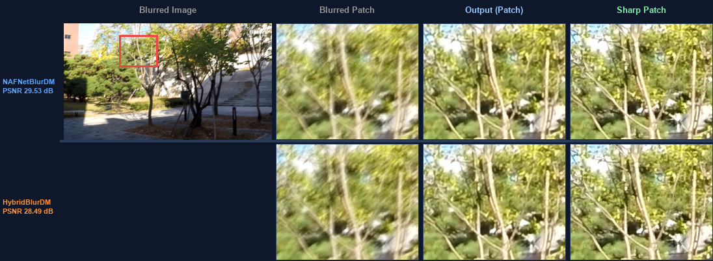
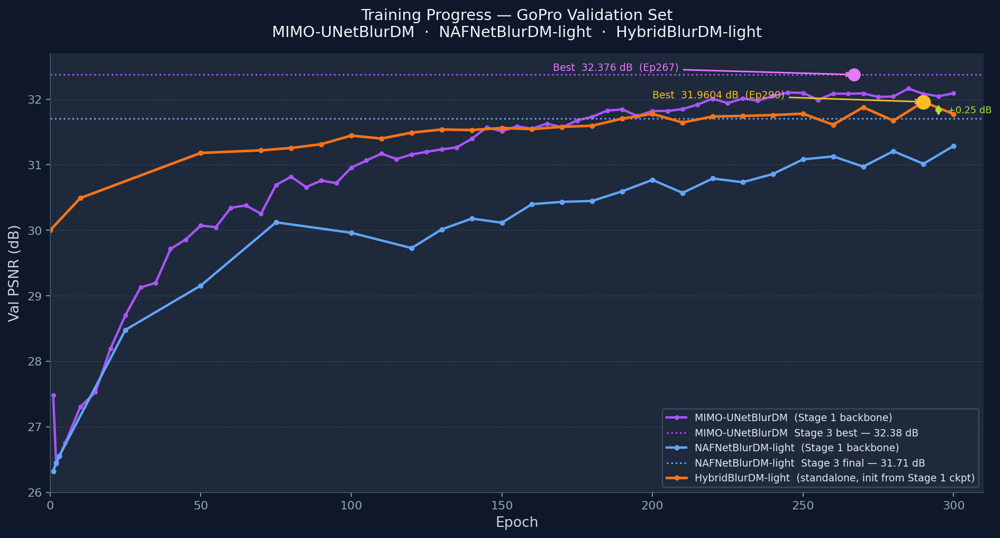

Image deblurring restores blurry images to sharp, clear images — a fundamental low-level vision task with broad real-world impact.
Blurred images lose important visual information, making restoration an ill-posed inverse problem — one blurred image may correspond to infinitely many sharp images.
Unlike standard diffusion that only adds Gaussian noise, BlurDM simultaneously introduces blur + noise during the forward process — modeling the physical degradation directly.
def forward(self, x: Tensor) -> Tensor: y = self.norm(x) f = self.freq(y) # FFT global branch — captures motion blur frequency signature s = self.spatial(y) # Depthwise spatial branch — preserves local structure return self.gate(torch.cat([f, s], dim=1)) # Learned channel-wise gate fuses both
class FiLMInjection(nn.Module): def __init__(self, channels, prior_dim): self.film = nn.Linear(prior_dim, channels * 2) nn.init.ones_(self.film.bias[:channels]) # γ=1 nn.init.zeros_(self.film.bias[channels:]) # β=0 def forward(self, x, prior): film = self.film(prior).unsqueeze(-1).unsqueeze(-1) scale, shift = film.chunk(2, dim=1) return x * scale + shift # FiLM(x) = γ·x + β
| Model | Params | Key Components |
|---|---|---|
| NAFNetBlurDM-light | ~18M | NAFBlocks + FiLM at each U-Net scale |
| HybridBlurDM-light | ~22M | DualDomainMixer · MotionStripConv · GatedFFN · Deformable Bottleneck |
| Stage | Epochs | Crop | LR Range |
|---|---|---|---|
| Stage 1 — Backbone + LE | 300 | 256px | 3e-4 → 1e-7 |
| Stage 1b — Extended | +300 | 256px | 5e-5 → 1e-7 |
| Stage 2 — Diffusion | 3000 | 256px | 1e-4 → 1e-6 |
| Stage 3 — Joint Fine-tune | 50 | 384px | 2e-6 → 1e-8 |
def fft_loss(criterion, pred, target): pf = torch.fft.rfft2(pred, norm="backward") tf = torch.fft.rfft2(target, norm="backward") return criterion( torch.stack([pf.real, pf.imag], dim=-1), torch.stack([tf.real, tf.imag], dim=-1), )




| Model | Variant | PSNR ↑ | SSIM ↑ | LPIPS ↓ |
|---|---|---|---|---|
| MIMO-UNetBlurDM | Stage 1 | 32.23 dB | — | 0.1122 |
| MIMO-UNetBlurDM | Stage 3 +DM | 32.38 dB | — | 0.0980 |
| NAFNetBlurDM-light | Stage 1 | 31.29 dB | 0.885 | 0.1318 |
| NAFNetBlurDM-light | Stage 3 +DM | 31.71 dB | 0.903 | 0.1193 |
| HybridBlurDM-light | Standalone ★ | 31.96 dB | 0.912 | 0.1129 |
